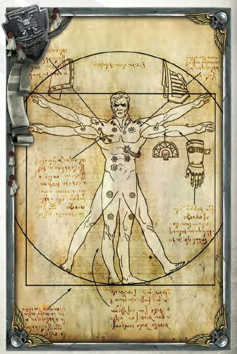
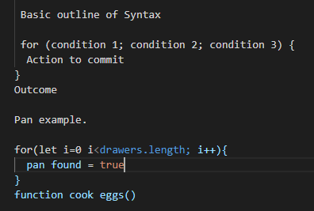
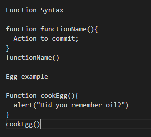

Javascript Fundamentals
Javascript's relationships
Thinking of a document like a human body and seeing it as natures computer. HTML would be the simple structure like bones, muscle and skin keeping the body together and structured and the main bulk of what you see and what fills the human body. CSS would be the beauty and style aspect things like Hair and Eye color, hair length and skin tone. Javascript is the brain function which gives the ability to complete complex tasks and equations although usually not as easily noticed as HTML and CSS its equally important for function.

Control flow and Loops
Control flow is the order of operations in a document. For example take a task with steps such as cooking an egg, Its important to do the flow in order otherwise it will just not work. If you were to ignore Control flow you might end up cracking the egg into the pan, then flipping it, then pouring oil into the pan and then turning on the heat. Doing it this way is ignoring control flow and creating a gigantic mess.
However if we took this example for cooking an egg. These instructions not only out of order but are very lacking for the amount of information a zero logic machine like a computer would need. One of the tools we use to help the computer with this flow and instructions are loops. Loops are helpful for rerunning an action with different values. The simplist is a "for loop". We could use a loop in this analogy for telling the computer to find a pan. You could tell it to check each drawer to find it until it is found and then continue the operation or cancel the operation due to the lack of instructions. The Loop would tell the computer how many drawers there are to check. lets say 5, it would run through each drawer in this example checking if there was a pan, If not go to the next drawer and so on. If a pan was found it would continue its steps in the operation to cook an egg. If no pans were found it would cancel the operation. Otherwise without the order to cancel it would keep doing this search for a pan in the same 5 drawers an infinte amount of times.
Below is a basic example of for loop

The DOM
The Document object model (DOM) is almost like a one sided family tree, it shows the nodes, elements and HTML elements in the document. It adds the ability to interact with elements in the document and using Javascript we can add more functions to these tools. For example we can find an element using the dom using the document.getElementById command and then we can interact with it by adding an event attribute to make it change color on double click.

Arrays and Objects
Arrays are like lists, They are an order of keys e.g. Shopping list or To do list. ["Vacuum","Mop","Sweep"] data listed in this way is very linear which means it is simple to access it using an Index number or [i] to use it in a for loop. An object is more specific and more generic such as names, address and phone number. This wouldn't work smoothly in an array and would be better as an object which is more individual in nature however to access it the command can be as simple as list.name.address which would access the list of information, the name of the person and then the address. This function is really simple and easy to use as its pretty straight forward like most objects themselves and works similar to how to access and use the dom.
Functions
Functions are helpful as they are like saved peices of code that can be found and rerun by calling it, For example a function can be as simple as a reminder when cooking. Functions are a very broad stroke method as they can run many different data types and can be changed to give a different result other than alerts such as displaying information on a page. When creating a function you can also give it (Paramenters) however this isn't always required but you always need a function name and a peice of function to be called within the "{}" of the code.
